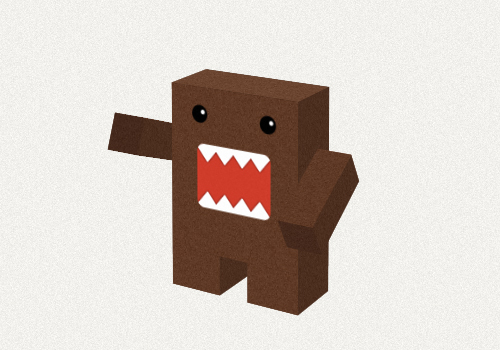

Sorry but your browser doesn't support CSS3 transform 3D :(
Agrrrr!!!
His name is DOMO. I've made this experiment during my last research about using 3D & CSS3 in web browsers. It works on Google Chrome (v.16 & up), Firefox (v.10 & up) & Safari (including mobile version for iOS).
Note: Move your mouse (or tap anywhere if you're using iOS) to change perspective angle. This code is available on github so if you want to create army of little Domos - do so but remember about me.